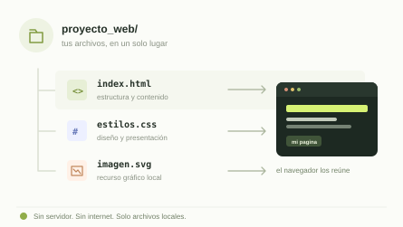

Dar estructura
Organizar el contenido con etiquetas estándar y semánticas de HTML5.
INFORME · DESARROLLO WEB
Un primer paso en el desarrollo front-end: crear una página clara, funcional y disponible directamente desde el computador.
HTML5 + CSS3 100 % local

TECNOLOGÍAS DEL PROYECTO
INTRODUCCIÓN
Una página web es un documento que un navegador interpreta para mostrar información, imágenes y enlaces. Aunque muchas páginas viven en servidores remotos, también es posible construirlas y abrirlas directamente desde el disco del computador.
En este proyecto, HTML organiza el contenido y CSS define su apariencia. Al mantener separados estructura y presentación, el sitio es fácil de entender, modificar y probar, incluso sin conexión a internet.
Un navegador también puede dar vida a archivos guardados en tu propio computador.
QUÉ BUSCAMOS
Aprender haciendo: de la estructura al navegador.
Desarrollar una página web funcional en un entorno local con HTML5 y CSS3, comprendiendo los fundamentos del desarrollo front-end sin depender de un servidor externo.
Organizar el contenido con etiquetas estándar y semánticas de HTML5.
Aplicar CSS3, una maquetación flexible y un diseño adaptable a distintas pantallas.
Comprobar estilos, imágenes y enlaces internos desde el navegador local.
EL PROCESO
Un flujo sencillo mantiene los archivos organizados y hace más fácil detectar errores.
Crear la carpeta proyecto_web y reunir allí el HTML, la hoja CSS y los recursos locales.
Crear index.html con su estructura base y secciones semánticas: encabezado, navegación, contenido y pie.
Vincular estilos.css desde el HTML y definir colores, espaciado, tipografía y distribución flexible.
Abrir el HTML en un navegador y verificar que carguen los estilos, las imágenes y los enlaces sin internet.
LO QUE CONSEGUIMOS
El navegador interpreta los archivos locales y los convierte en una interfaz navegable, sin necesidad de alojarla en internet.
Títulos, textos y secciones se presentan con una jerarquía clara gracias a HTML5.
La hoja CSS local aplica una presentación legible y adaptable a distintos tamaños de pantalla.
Al usar rutas relativas y archivos locales, el sitio no depende de servicios externos para mostrarse.
La experiencia completa se encuentra en los archivos de este proyecto.
CONCLUSIONES
01 Un navegador puede mostrar una página completa desde archivos locales, sin servidor ni conexión.
02 Separar HTML y CSS facilita organizar el código y cambiar el diseño sin tocar el contenido.
03 Las rutas relativas importan: cada archivo debe estar donde la página espera encontrarlo.